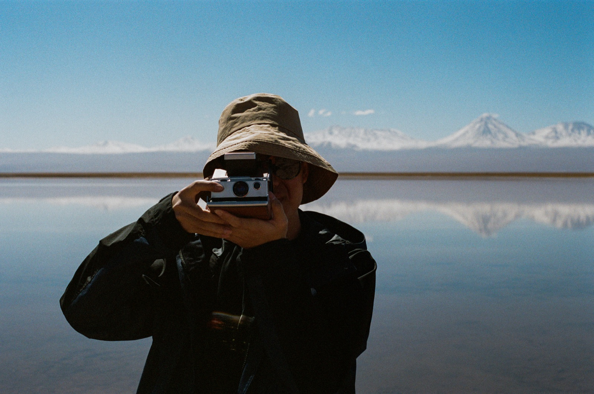
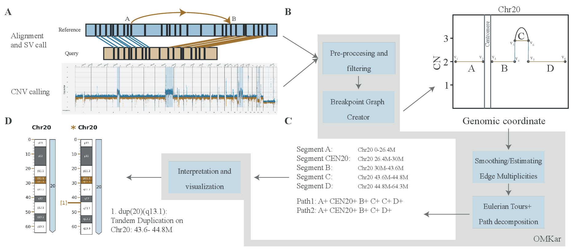
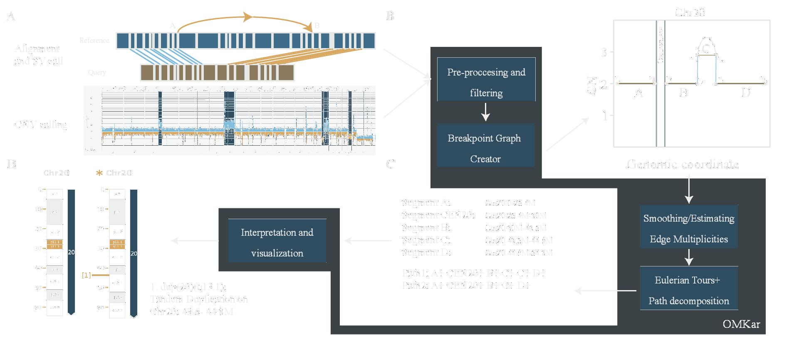

PhD student in computer science at UC San Diego

I'm a PhD student in Computer Science at UC San Diego in Vineet Bafna's lab. I develop algorithms and machine learning methods for clinical genomics, drawing on a strong foundation and experience in both computer science and molecular biology.
My current work is on detecting and reconstructing complex structural rearrangements, including Robertsonian translocations and extrachromosomal DNA (ecDNA), from long-read sequencing and optical mapping data. The long-term goal is a single, cost-efficient clinical assay that captures most of the genomic rearrangements and variations that matter for inheritance and disease. In practice, that means working with clinicians and experimental biologists to turn their questions into tractable computational problems, then building efficient and interpretable methods to sieve signals from terabyte-scale whole-genome sequencing data.
Robertsonian translocations (RTs) fuse two acrocentric chromosomes and are among the most common constitutional rearrangements in humans (1 in 800), where half of the gametes produced by the carrier are genotypically imbalanced, resulting in miscarriage or significant developmental problems in the offspring. The fusion point sits in satellite repeats, so conventional mapping-based methods cannot resolve it. An RT also deletes the short arms of both chromosomes involved, but this loss cannot be measured from read depth because satellite repeat lengths vary greatly across individuals. Thus, there has not been a reliable method to diagnose RTs through sequencing.
I hypothesized, developed, and deployed a novel method for estimating copy number loss of the acrocentric p-arms directly from raw Oxford Nanopore long-read sequencing. Although the lengths of the satellite arrays vary, I observed that their order along the short arms is highly conserved, so I estimate short-arm copy number by counting the transitions between adjacent satellite arrays instead of measuring depth. To make this practical on a large control cohort, I trained a CNN+BiLSTM pre-filter that screens reads for candidate sequences before an exact but more expensive dynamic programming step, making the first pass over 60+ TB of data about 25 times faster than an alignment-first pipeline. Across 224 HPRC and 9 clinical samples, the method identified all known carriers (100% recall) at 98% precision.
OMKar reconstructs a full karyotype from Bionano optical genome mapping, automating what is otherwise a manual cytogenetics workflow. It uses graph algorithms and integer linear programming to reconcile structural variant and copy number calls into a consistent set of chromosomes. We correctly reconstructed 144 of 154 clinical karyotypes (94%) and proposed genetic explanations for five cases that previously had none. To validate the method, we built a simulation and evaluation framework around it: a parameterized random karyotype generator that produces up to three whole genomes per minute, and a quantitative karyotype comparison that drives automated regression testing across pipeline versions. We also worked closely with cytogeneticists to turn OMKar's output into ISCN-based reports and visualizations.


Much of my day-to-day is engineering: modular pipelines that survive contact with tens of terabytes, Python multiprocessing, and memory and runtime profiling. Earlier, I built reproducible RNA-seq and iCLIP pipelines for a wet-lab group and ran a DNA-repair study end to end, from CRISPR knockouts to the sequencing analysis.
Structural-variation detection in long reads, automated karyotyping, and the pipelines behind both.
Reproducible, parameterized pipelines for bulk, small-RNA, single-cell RNA-seq, and iCLIP data; co-designed experiments with wet-lab biologists.
A DNA-repair mechanism study end to end: CRISPR knockout lines, sequencing of repair products, and the analysis pipeline that flagged abnormal outcomes.
Supervising four bachelor's and master's students on modules of my project.
Core course of the Bioinformatics PhD program.
Advised 12+ students on research and career paths.
Applied machine learning and computational genomics.
Advisor: Vineet Bafna.